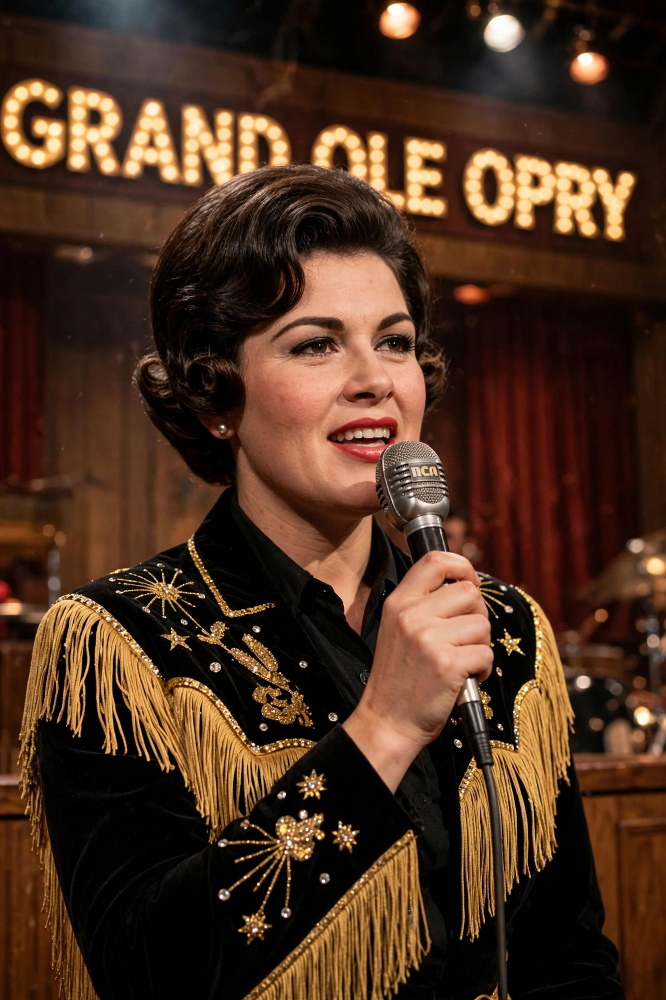

Patsy Cline (born Virginia Patterson Hensley; 8 September 1932 – 5 March 1963) was an American country singer, one of the most influential vocalists of the 20th century and a pioneer of the Nashville sound.

Cline signed with Four Star Records in 1954 and had her breakthrough with "Walkin' After Midnight" (1957). Moving to Decca and producer Owen Bradley, she recorded "I Fall to Pieces" (1961), "Crazy" (written by Willie Nelson), and "She's Got You", crossing over to pop charts with lush orchestration and her emotive contralto.
She died aged 30 in a private plane crash near Camden, Tennessee, returning from Kansas City. Posthumous hits, the 1985 biopic Sweet Dreams starring Jessica Lange, and induction into the Country Music Hall of Fame in 1973 cemented her status as country music's defining female voice.